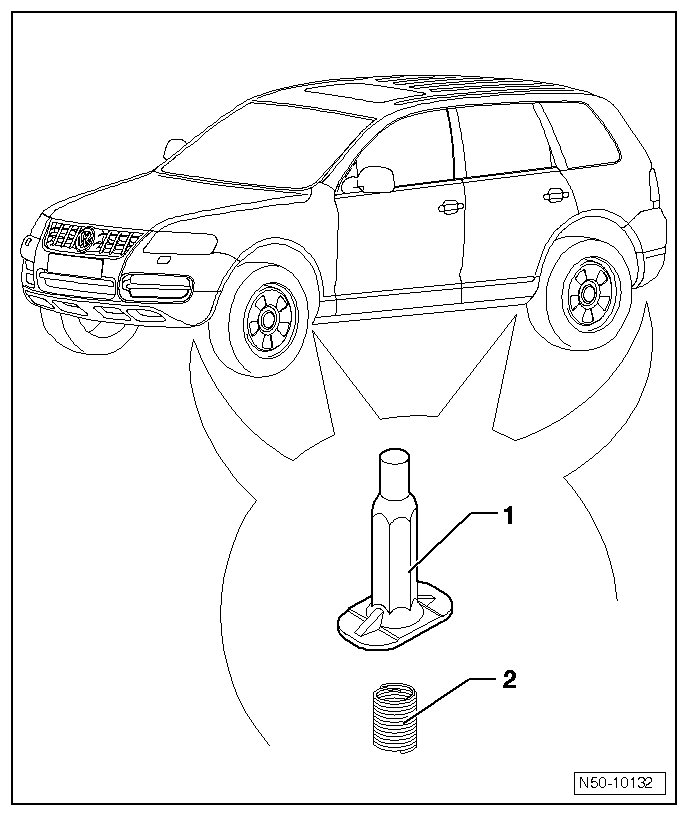
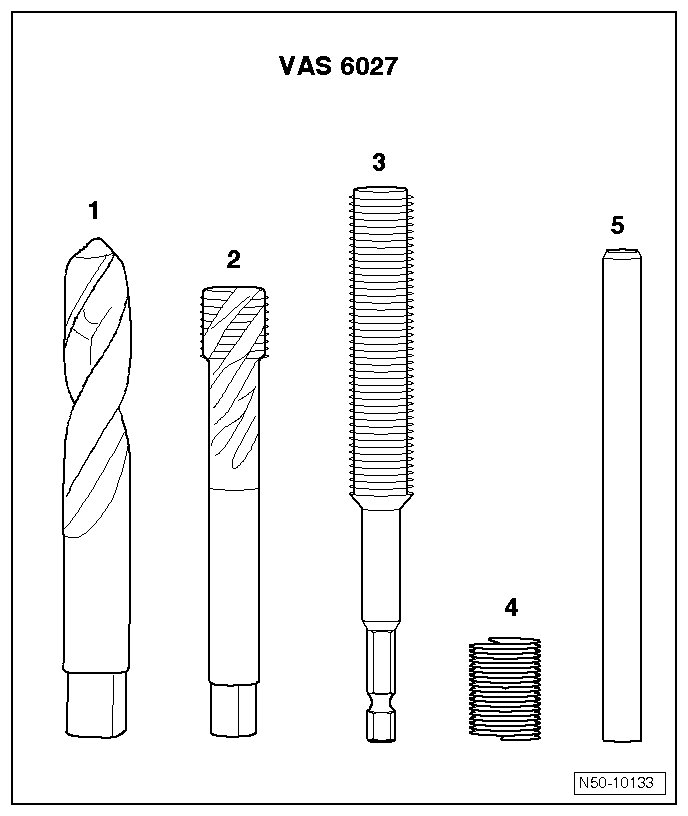
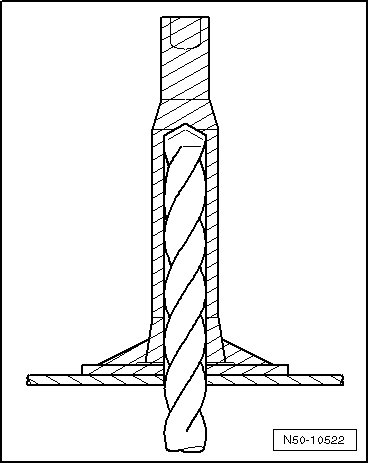
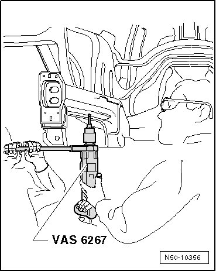
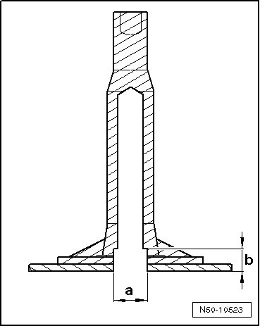
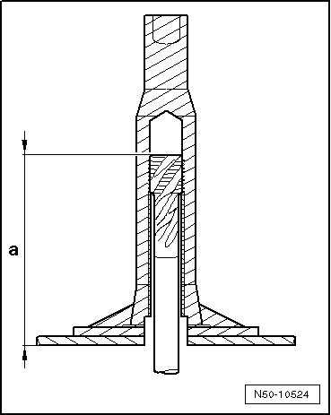
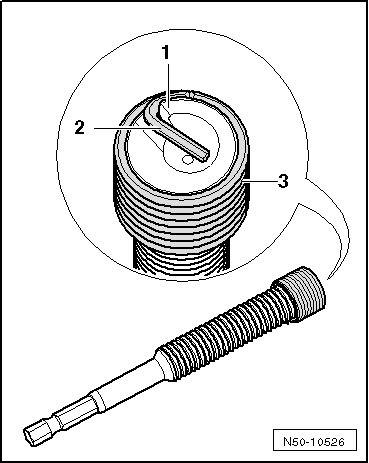
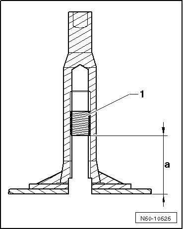
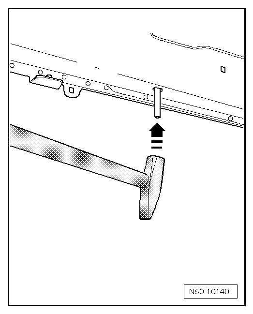

Subframe Mounting Threads
Subframe Mounting Threads
CAUTION!
Before starting any repairs always follow safety precautions located in.
Special tools, testers and auxiliary items required
• Thread repair set M14x1.5 (VAS 6027)
• Drill (VAS 6267)

1 Threaded sleeve (in vehicle)
• Threaded sleeve is not a replacement part and may only be repaired once if damaged!
• If damaged again, longitudinal member must be replaced.
2 Helicoil thread insert
Contents of Thread Repair Set

1 Spiral bore
2 Tap M14x1.5
3 Installing spindle
4 Thread insert M14x1.5x28
5 Peg breaker with magnetic tips
Repairing Threads
Threads, Drilling
- Drill out thread path up to thread base using spiral bore.

• For drilling and grinding, use drill (VAS 6267).
• While drilling, drill must be held by a second person using an additional handle.

Threads, Cutting
- If the required thread depth is not reached because the bore is placed crooked, a guide bore with a maximum 16 mm diameter dimension - a - and a maximum depth of 20 mm dimension - b - can be drilled.

- Thread is cut using tap until dimension - a - = at least 63 mm.

- Clean threaded bushing (blow with pressurized air).
Inserting Thread Inserts

- Screw thread insert - 3 - on to installing spindle until drive peg - 2 - makes contact on drive tab - 1 - of installing spindle.
- Install threaded insert - 1 - up to dimension - a - 30 mm +1/-3 in threaded sleeve (turn lightly without force).
- Check dimension on depth gauge.

- Remove installing spindle.
- Drive peg of thread insert is broken using the peg breaker.

- Install subframe (suspension subframe)